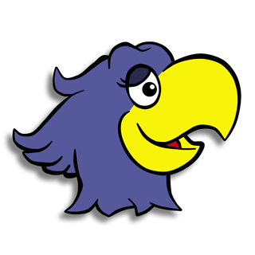

Papagayo-NG
Version: 1.4.1
© 2005-2006 Mike Clifton
© 2013-2017 Morevna Project

A lip-sync tool.
This software uses the Carnegie Mellon Pronouncing Dictionary.
Spanish pronunciation code provided by Myles Strous
3D mouth shapes provided by Gary C. Martin.
License